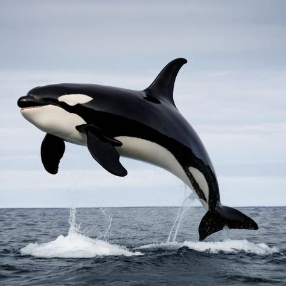
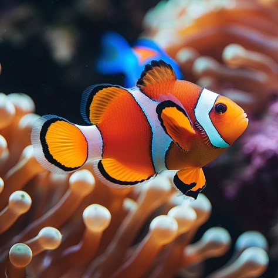

Maps

Paus orca
Paus Orca (Orcinus orca), spesies lumba-lumba terbesar, dikenal dengan tubuh hitam-putih mencolok dan sirip punggung tinggi. Hidup di perairan Indonesia seperti Laut Banda, orca memburu ikan dan cumi secara berkelompok dengan strategi cerdas dan ikatan sosial kuat. Baca Artikel
Karang Tanduk Rusa
Staghorn Coral (Acropora cervicornis) adalah karang bercabang mirip tanduk rusa yang tumbuh cepat di perairan dangkal Indonesia. Warnanya bervariasi dan menjadi habitat penting bagi ikan kecil. Karang ini rentan terhadap pemutihan akibat perubahan suhu laut. Baca Artikel

Clown Fish
Clown Fish (Amphiprioninae) adalah ikan kecil berwarna oranye dengan garis putih khas. Hidup bersimbiosis dengan anemon laut yang melindunginya dari predator. Ditemukan di terumbu karang Indonesia, ikan ini dikenal karena perilaku sosial unik dan kemampuannya berubah kelamin. Baca Artikel